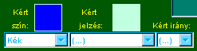
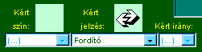

|
|
... ha ránk kerül a sor és extra sorozási lehetõségünk van?
[Legutóbb valaki  tulajdonságú lapot tett és nem élt az ezzel járó extra sorozási lehetõséggel.] tulajdonságú lapot tett és nem élt az ezzel járó extra sorozási lehetõséggel.]
[Most nem a hagyományos lerakhatósági szabályok érvényesek!]
 Extra sorozás:
Extra sorozás:
-
Az aktuális lap tulajdonságú, amely különleges lehetõséget ad egyébként egyszerre nem
lerakható lapoktól való megszabadulásra (sõt, az extra sorozás bizonyos esetekben ez még plusz elõnyökkel
is jár). Hogy ez pontosan mi, azt az aktuális jelzés JelzésSúgójából tudhatjuk meg. Az extra sorozást jól
gondoljuk ki elõre, mert egy lerakott lapot már nem lehet visszavenni. Ha megvan, hogy mi lesz az elsõ lap:
- Jelöljük ki a kártyát rákattintással
- Nyomjuk meg a [Lerak] gombot.
-
Ha van kért szín vagy jelzés, akkor annak megfelelõ lapot kell tenni (további részletek - pl. kérés felülbírálása -
a
 és a és a  laptulajdonság leírásában). laptulajdonság leírásában).


Eztuán lehet majd sorra a többi kártyát lerakni az extra sorozás keretében.
-
Extra sorozáskor csak a legutoljára lerakott lap speciális jelentése érvényesül (ha van neki),
a közbensõk nem. További részletek az adott extrasorozó lap JelzésSúgójában, illetve az
jelzéstulajdonság leírásában.
Olyan lapot is rakhatunk, mely nem vehetõ extra sorozásnak, de a hagyományos módon illeszkedik:
-
A legutóbb lerakott, extrasorozó kártyára olyan, színben vagy jelzésben illeszkedõ lapot
is tehetünk, melynek lerakása nem tekinthetõ extra sorozásnak. Az aktuális szín és jelzés Szín-/JelzésSúgójából megtudhatjuk,
milyen illeszkedés lehetséges. A leggyakoribb eset az, amikor lila lapot teszünk le, vagy egy másik, jelzésben megegyzezõ extra sorozót.
[További részletek a KártyaSúgóban.]
Egy kártya lerakásához:
- Jelöljük ki a kártyát rákattintással
- Nyomjuk meg a [Lerak] gombot.
-
Ha van kért szín vagy jelzés, akkor annak megfelelõ lapot kell tenni (további részletek - pl. kérés felülbírálása -
a és a laptulajdonság leírásában).
-
Fontos megjegyezni, hogy ha egy kártya felfogható extra sorozás elsõ lapjaként, akkor a rendszer
annak veszi. Ez bizonyos korlátozást jelenthet a hagyományos sorozásra nézve (ld. az extrasorozó lap JelzésSúgóját).
Passzolhatunk:
-
Ha nem tudunk vagy nem akarunk lerakni egy kártyát sem ebben a körben, akkor
nyomjuk meg a [Passz] gombot. Ez esetben viszont kapunk egy kártyát a pakliból és
az extra sorozási lehetõség a következõ játékosra száll!
Bármikor kiszállhatunk a játékból a jobboldali kék Játékpanelen lévõ [Kiszáll] gomb megynyomásával.
Cseveghetünk a többi játékossal a Csevegõ használatával.
Szín- és JelzésSúgó behívása egy kártyához:
|
Egy kezünkben lévõ kártyát kijelölve az egérrel megjelenik annak kis négyzetalakú szín/jelzés-piktogramja
a bal oldalon a gombok alatt. Ha odakattintunk az egérrel, megjelenik a KártyaSúgó menü és abból választhatjuk ki.
Hasonlóan kérhetünk Szín/JelzésSúgót az akutális színrõl és jelzésrõl (az esetleges kért színrõl vagy jelzésrõl is), illetve a jelzéslapról: a hozzájuk
tartozó kis négyzetalakú piktogramra kattintva jelenik meg a hozzájuk tartozó KártyaSúgó menü.
|

|
|
|

 Bevezetõ |
Bevezetõ |
 Szabályok |
Szabályok |
 Súgó |
Súgó |
 Paklik
Paklik